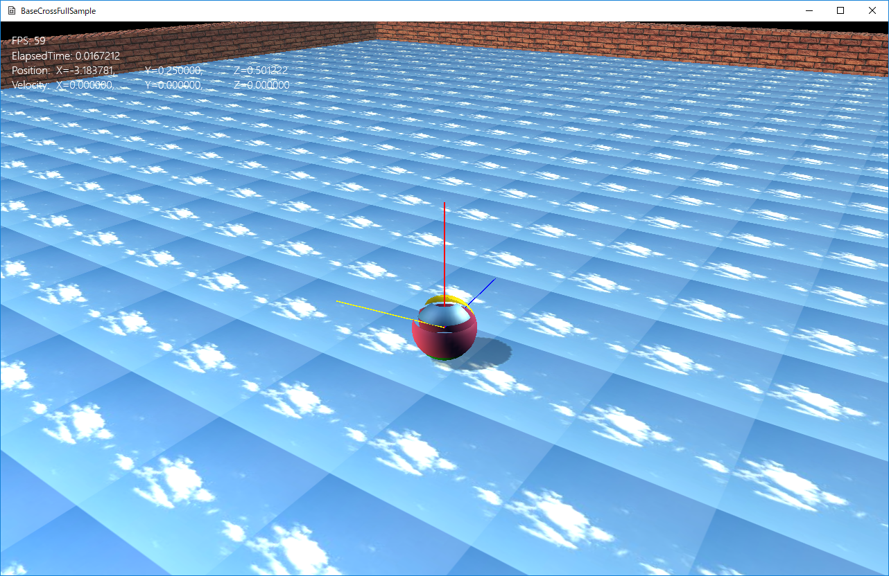

図0309a
//プレイヤーの作成
void GameStage::CreatePlayer() {
//プレーヤーの作成
auto PlayerPtr = AddGameObject<Player>();
//シェア配列にプレイヤーを追加
SetSharedGameObject(L"Player", PlayerPtr);
auto StartPos = PlayerPtr->GetComponent<Transform>()->GetPosition();
auto EndPos = PlayerPtr->GetComponent<Transform>()->GetForword();
EndPos += StartPos;
auto LinePtr = AddGameObject<ActionLine>(StartPos,EndPos, Col4(1.0f, 1.0f, 0, 1.0f));
//シェア配列に前方ラインを追加
SetSharedGameObject(L"ForwordActionLine", LinePtr);
EndPos = PlayerPtr->GetComponent<Transform>()->GetUp();
EndPos += StartPos;
LinePtr = AddGameObject<ActionLine>(StartPos, EndPos, Col4(1.0f, 0.0f, 0, 1.0f));
//シェア配列に上方ラインを追加
SetSharedGameObject(L"UpActionLine", LinePtr);
EndPos = PlayerPtr->GetComponent<Transform>()->GetRight();
EndPos += StartPos;
LinePtr = AddGameObject<ActionLine>(StartPos, EndPos, Col4(0.0f, 0.0f, 1.0f, 1.0f));
//シェア配列に右方ラインを追加
SetSharedGameObject(L"RightActionLine", LinePtr);
}
void Player::OnUpdate2() {
auto LinePtr = GetStage()->GetSharedGameObject<ActionLine>(L"ForwordActionLine");
auto StartPos = GetComponent<Transform>()->GetPosition();
auto EndPos = GetComponent<Transform>()->GetForword();
EndPos += StartPos;
LinePtr->ResetObject(StartPos, EndPos);
LinePtr = GetStage()->GetSharedGameObject<ActionLine>(L"UpActionLine");
EndPos = GetComponent<Transform>()->GetUp();
EndPos += StartPos;
LinePtr->ResetObject(StartPos, EndPos);
LinePtr = GetStage()->GetSharedGameObject<ActionLine>(L"RightActionLine");
EndPos = GetComponent<Transform>()->GetRight();
EndPos += StartPos;
LinePtr->ResetObject(StartPos, EndPos);
//文字列の表示
DrawStrings();
}